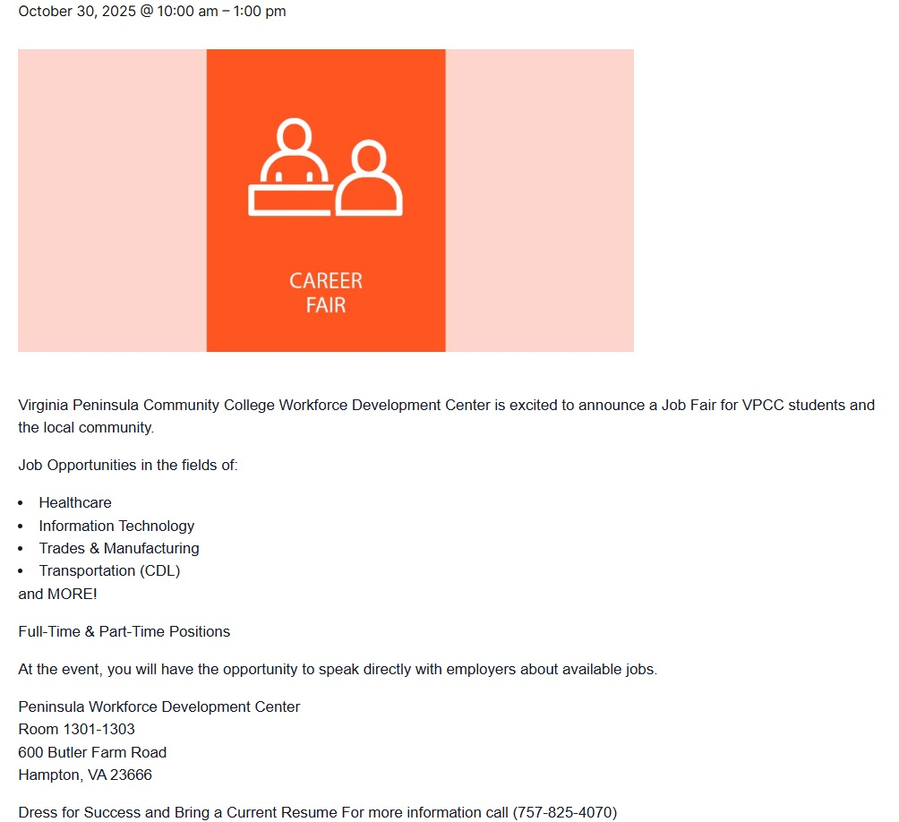
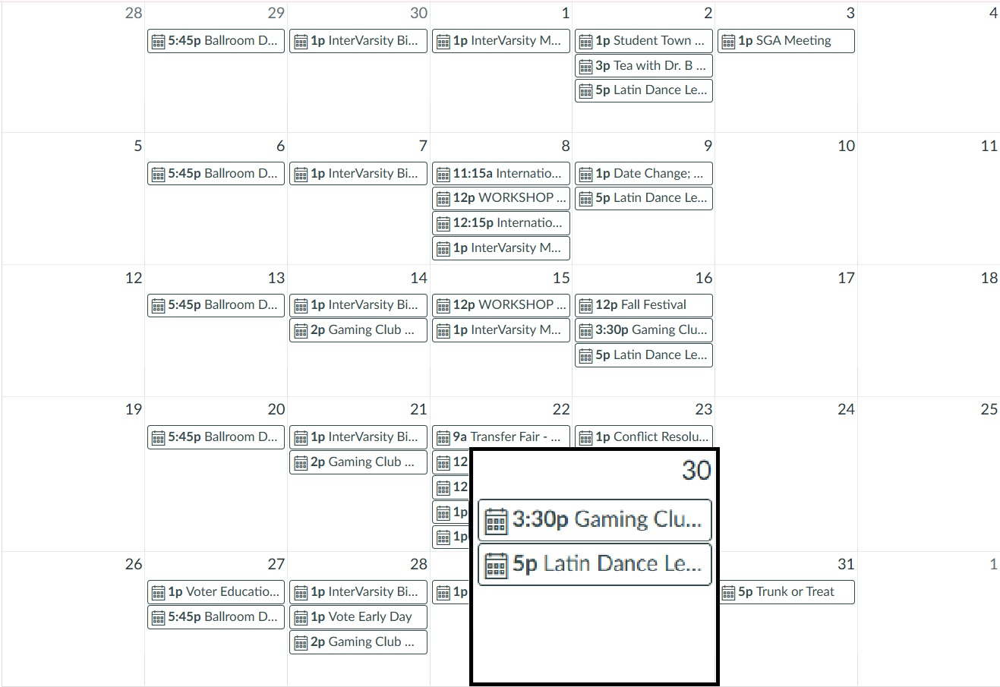
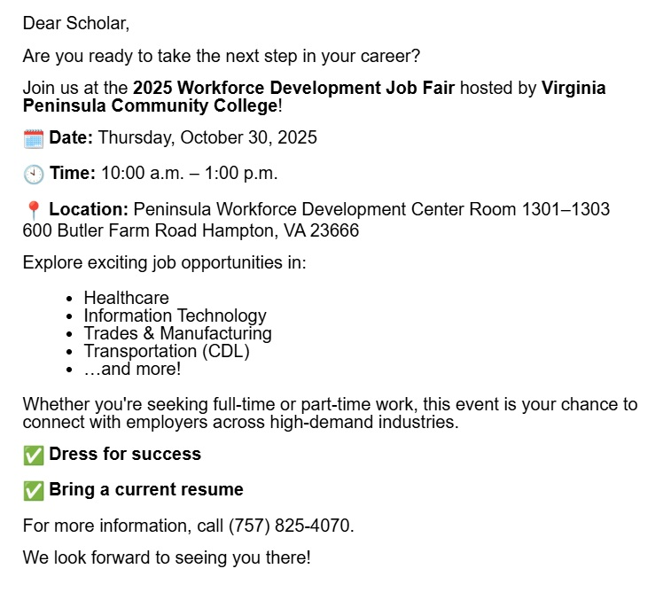
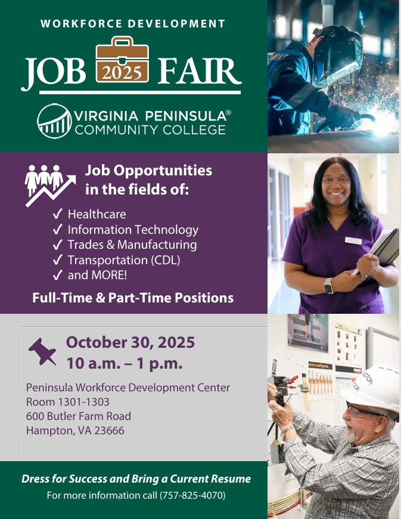

Page 1: | Home
Page 2: | The Case For Digital Advertising
Page 3: | The Case For In-Person Advertising
Page 4: | Final Thoughts
Page 5: | Works Cited
College is the place where young people go to get started on their future and work on building the skills necessary to succeed in their workforce of choice. Job fairs are a fantastic opportunity to help them along with this, with VPCC hosting several job fairs throughout the year. Some of these fairs are more general in scope, bringing in representatives from a variety of industries, while others are more focused and only cater to one specific industry. But all of them give valuable information that will be of use to any student that attends them. The problem is that many students at VPCC have never attended a job fair and have unfortunately squandered a valuable chance to get an advantage in their lives. In large part, this is due to insufficient marketing on behalf of the event organizers. Most students are unaware that a job fair is even scheduled, and the ones that do are unconvinced that it is worth their time. There are a few ways to address this problem, but the two most important ones are through digital marketing and in-person marketing. So which of these strategies would be most effective?



